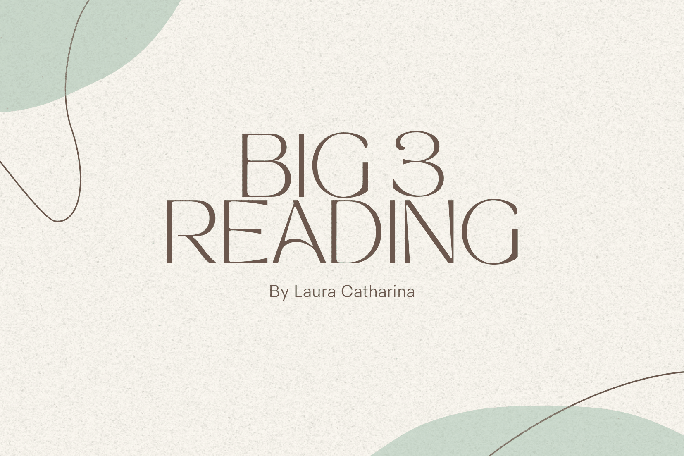
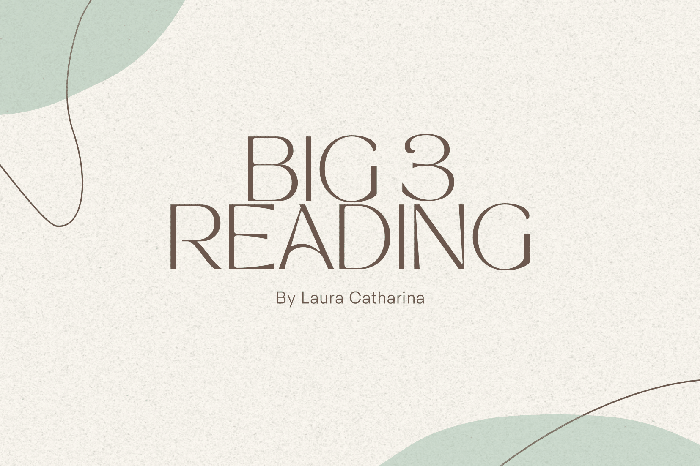
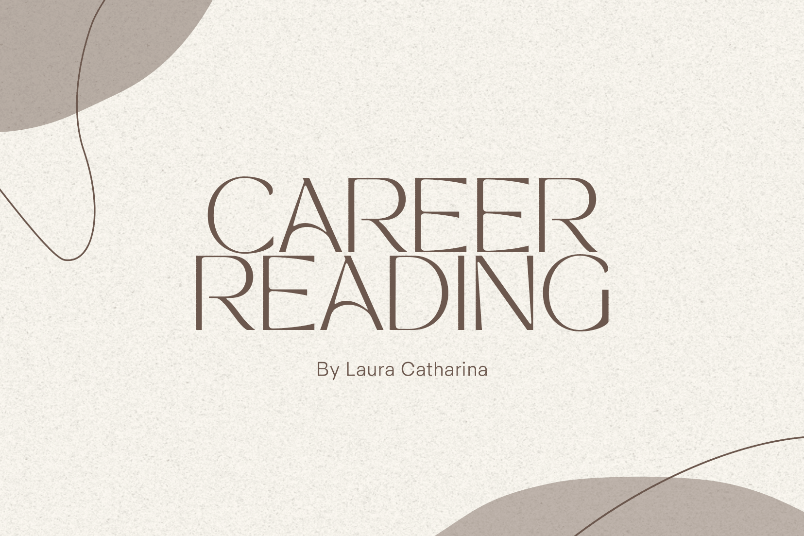
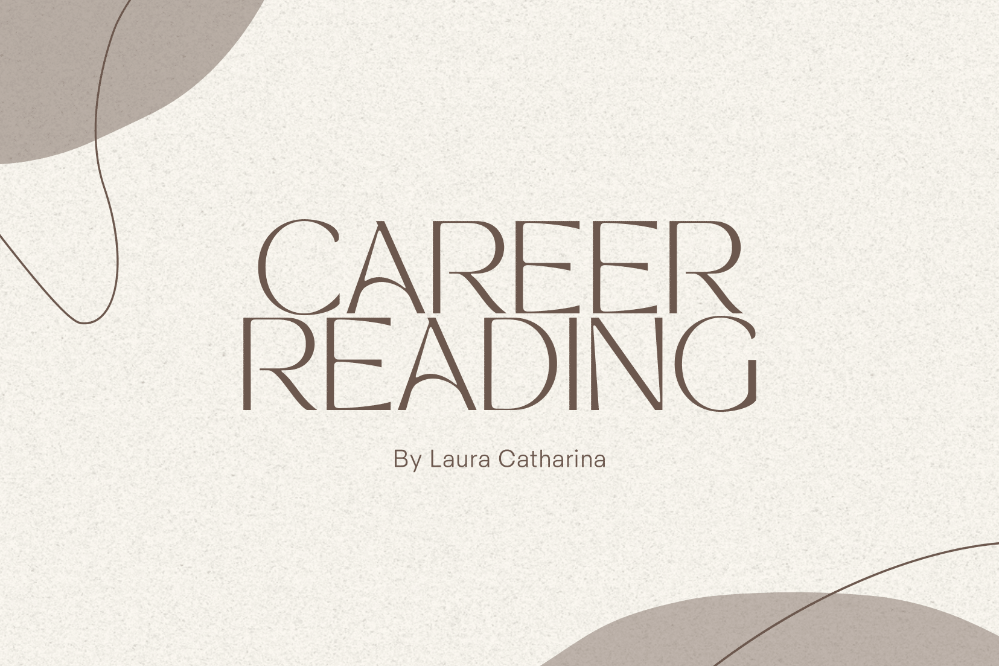
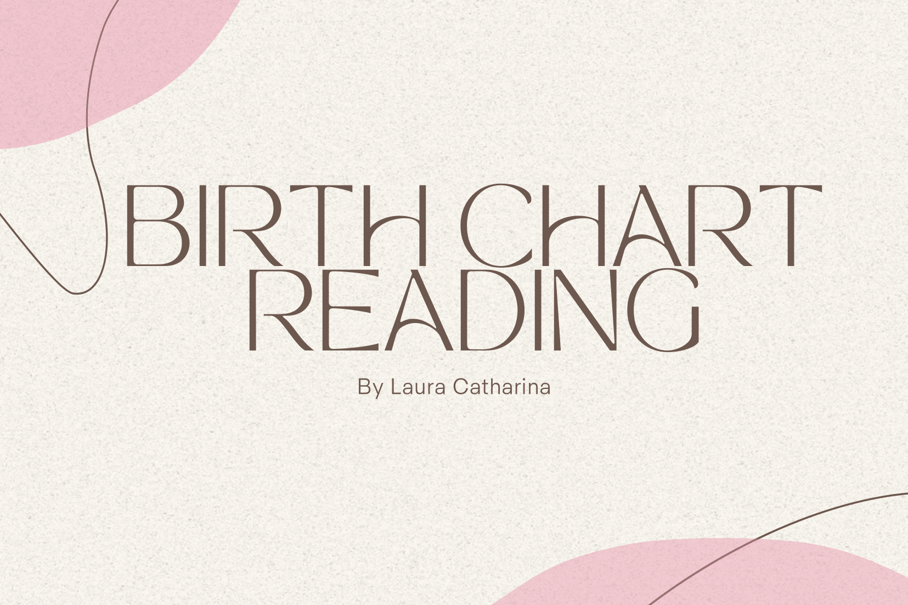
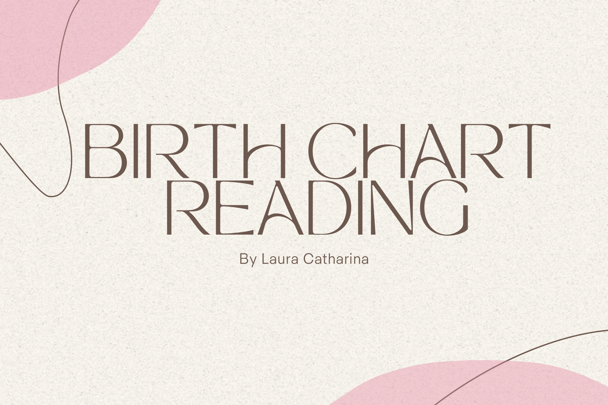

Readings
Big Three | Career | Birth Chart
 

Your Big 3 refers to your sun sign, moon sign, and rising sign. This reading shows you in a short, concise way what your strengths, weaknesses and challenges are in life, and in which areas of life these will play out. If you are curious about astrology and want to give it a try without going into too much depth, then this is the perfect reading for you.
Read more 

This career reading is based on your birth chart but gives you specific insight into your work and career. For example, I will look at what your possible role within society is, where your talents and passions lie and whether or not you are career-oriented at all. For me personally, this reading really helped me determine my ideal career path.
Read more 

This birth chart takes a deep dive into your unique blueprint of the moment you were born. You can see it as a 'screenshot' of the sky and the exact positions of the planets at the time of your birth. This reading can give you a lot of information about your life and can serve as a wonderful tool for self-discovery and self-actualization.
Read more"You were spot on with the things you picked up in my reading! It really explains who I am and why I am the way I am."
- Jade (NB, The Netherlands)
"You did an excellent job! My birth chart was very easy to read and your English was perfect."
- Tyler (FL, United States)
"My birth chart was very detailed, it gave me so much clarity. I learned a lot about myself and I now know the path I need to follow. Thank you!"
- Maxime (L, The Netherlands)
Located in
Limburg, The Netherlands